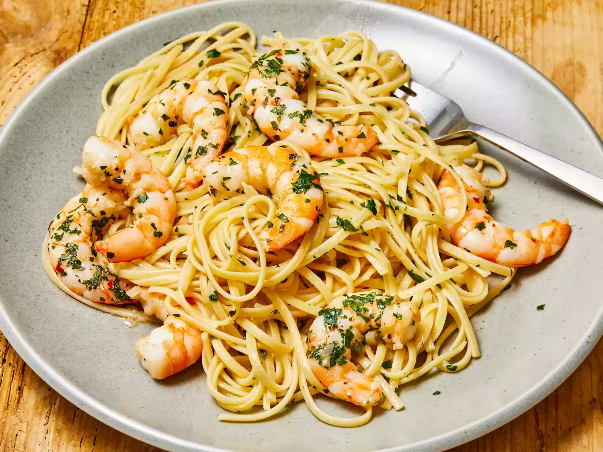

Shrimp Scampi Pasta

Descripcion
Shrimp scampi is a seafood dish made of shrimp cooked in a butter, garlic, and white wine sauce. This recipe can be made in many ways. Everyone has a different version, but scampi usually includes these three ingredients. You can serve shrimp scampi by itself as an appetizer or over pasta as a main dish.
- Shrimp
- Pasta
- Butter
- Extra-virgin olive oil
- Shallots and garlic
- White wine
- Lemon juice
- Seasonings
- Parsley
Pasos
- Shrimp: Choose large shrimp (31 to 35 shrimp per pound) to get best results for this recipe. You can buy fresh shrimp and peel and devein it yourself, or buy frozen shrimp. Thaw frozen shrimp before using.
- Pasta: This recipe uses a 16-ounce package of linguine, but you can substitute the pasta of your choice, like angel hair pasta, fettuccine, or spaghetti.
- Butter: Use unsalted butter. You can add salt to taste later in the recipe.
- Extra-virgin olive oil: The flavor of the olive oil comes through in this recipe, so use the best quality.
- Shallots and garlic: These aromatics add flavor and fragrance to shrimp scampi.
- White wine: Use a dry, crisp white wine for shrimp scampi sauce. Pinot grigio or sauvignon blanc are good choices, and you can drink the leftover wine with dinner. If you don't have a bottle to use, chicken stock or white whine vinegar make great substitutes.
- Lemon juice: Use freshly squeezed lemon juice for the best flavor.
-
- Parsley: Fresh parsley adds eye-catching color and a bright, peppery flavor.
- Prep ahead: Have all of your ingredients prepared and ready to cook before heating your skillet. You don't want to have to pause to cut, chop, squeeze, or measure right in the middle of a fast-moving recipe. If using fresh shrimp, you can peel and devein the shrimp early in the day, then chill it in the refrigerator until you're ready cook.
- Cook the pasta first: Boil the pasta in well-salted water, drain, and hold aside before cooking the shrimp scampi. You'll add the pasta to the hot skillet to warm it before serving. Time your cooking so you're ready to start cooking the shrimp immediately after the pasta is drained; you don't want the pasta to sit for too long.
- Don't overcook the shrimp: It takes just a couple of minutes to cook raw shrimp, and if they cook for too long, shrimp turn tough and rubbery. You'll know the shrimp are close to done when they start to curl into a C shape and turn from translucent gray to opaque pink and white.
Home